Context, Modality
and Dose
What Shapes the Individual Exercise Response?
Exercise does not produce an identical response in every individual. Biological condition, behavioral state, exercise modality and exercise dose interact to determine how the body perceives and responds to physical activity.
Circadian state, sleep status, stress load, motivation, affect and environmental context can influence neuroendocrine activation, autonomic tone, perceived exertion and overall exercise responsiveness.
BEHAVIORAL & CONTEXTUAL
MODIFIERS
INDIVIDUAL
PHYSIOLOGICAL STATE
EXERCISE MODALITIES
EXERCISE DOSE
- Intensity
- Duration
- Frequency
- Progression
- Recovery

BEHAVIORAL & CONTEXTUAL
MODIFIERS
Circadian State
Sleep Status
Stress Load
Motivation / Affect
Environmental
Context
INDIVIDUAL
PHYSIOLOGICAL STATE
Neuroendocrine
Activation
Autonomic Tone
Perceived
Exertion
Exercise
Responsiveness
EXERCISE MODALITIES
Aerobic
(Endurance)
Resistance
(Strength)
HIIT
(Interval)
Mobility /
Balance
EXERCISE DOSE
- Intensity
- Duration
- Frequency
- Progression
- Recovery
Read diagram text
BEHAVIORAL & CONTEXTUAL MODIFIERS
Circadian State
Sleep Status
Stress Load
Motivation / Affect
Environmental Context
INDIVIDUAL PHYSIOLOGICAL STATE
Neuroendocrine Activation
Autonomic Tone
Perceived Exertion
Exercise Responsiveness
EXERCISE MODALITIES
Aerobic (Endurance)
Resistance (Strength)
HIIT (Interval)
Mobility / Balance
EXERCISE DOSE
- Intensity
- Duration
- Frequency
- Progression
- Recovery
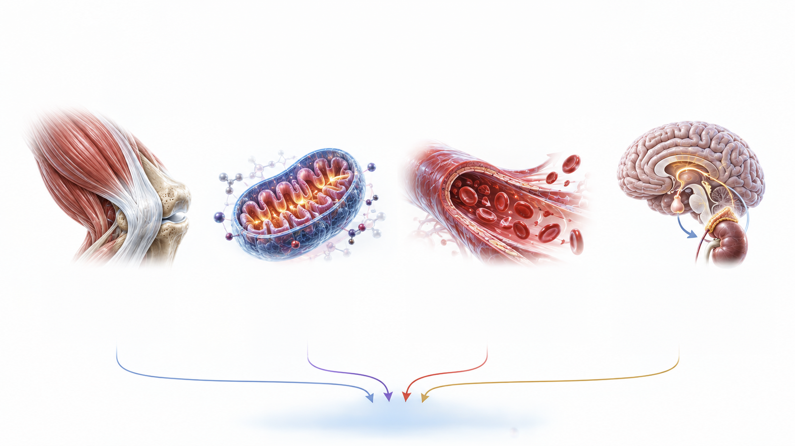
Physiological Sensors During Exercise
How the Body Detects Physical Activity
During exercise, the body simultaneously detects mechanical, metabolic, vascular and neuroendocrine changes.
Mechanical loading reflects muscle contraction and stress on tendons and bones. Metabolic stress reflects increased energy demand,
calcium signaling, lactate production and glycogen use.
Changes in blood flow and oxygen availability generate hemodynamic and hypoxic signals, while sympathetic and hormonal activation
coordinates whole-body readiness.
Together, these signals initiate the body’s acute physiological response.
MECHANICAL LOADING
- Muscle Contraction
- Tendon & Bone Stress
- Mechanotransduction
- Integrin / FAK / YAP–TAZ
HEMODYNAMIC & HYPOXIC SIGNALS
- Blood Flow & Shear Stress ↑
- Nitric Oxide (NO) ↑
- Transient Hypoxia
- HIF-1α Activation
NEUROENDOCRINE ACTIVATION
- Sympathetic Activation
- Catecholamines ↑
- Growth Hormone ↑
- Cortisol (Acute) ↑
- Insulin / Glucagon Modulation
ACUTE PHYSIOLOGICAL RESPONSE
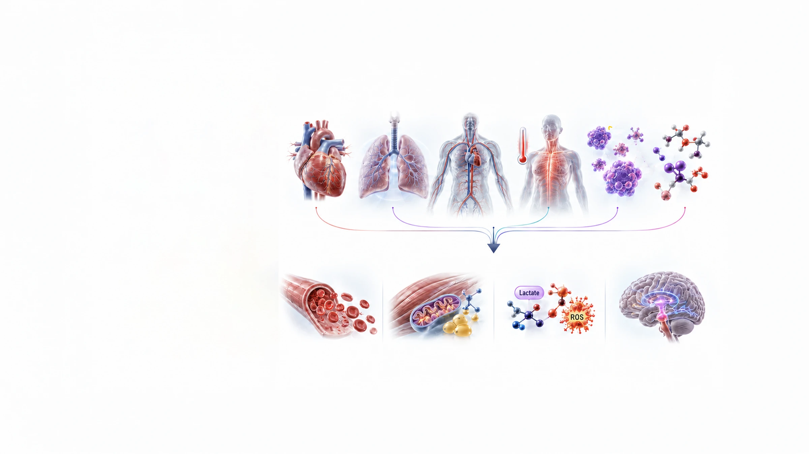
Acute
Physiological
Responses
From Physiological Detection to Immediate Action
Mechanical, metabolic, vascular and neuroendocrine signals converge to produce rapid physiological changes within minutes to hours.
Heart rate, ventilation, circulation and body temperature increase, while hormones and metabolites enter circulation. These coordinated responses improve substrate availability, deliver oxygen and nutrients to active tissues and prepare cells and neuroendocrine systems for adaptation.
ACUTE PHYSIOLOGICAL RESPONSES — MINUTES TO HOURS
- Heart Rate &
Cardiac Output ↑ - Ventilation &
Oxygen Uptake ↑ - Blood Flow to Active &
Key Organs ↑ - Body
Temperature ↑ - Hormonal
Surge - Metabolite
Release
KEY ACUTE OUTCOMES
Enhanced Nutrient &
Oxygen Delivery
Improved Perfusion and
Substrate Availability.
Energy Mobilization
Glucose and Fatty Acids;
Increased Substrate
Availability.
Metabolic By-Product
Signaling
Lactate and ROS;
Signals to Inform Cells.
Neuroendocrine Priming
Elevated Readiness
for Adaptation.

ACUTE PHYSIOLOGICAL RESPONSES — MINUTES TO HOURS
Heart Rate &
Cardiac Output ↑
Ventilation &
Oxygen Uptake ↑
Blood Flow to Active &
Key Organs ↑
Body
Temperature ↑
Hormonal
Surge
Metabolite
Release
KEY ACUTE OUTCOMES
Enhanced Nutrient &
Oxygen Delivery
Improved Perfusion and
Substrate Availability.
Energy Mobilization
Glucose and Fatty Acids;
Increased Substrate
Availability.
Metabolic By-Product
Signaling
Lactate and ROS;
Signals to Inform Cells.
Neuroendocrine Priming
Elevated Readiness
for Adaptation.
Lactate
ROS
Read diagram text
ACUTE PHYSIOLOGICAL RESPONSES — MINUTES TO HOURS
Heart Rate & Cardiac Output ↑
Ventilation & Oxygen Uptake ↑
Blood Flow to Active & Key Organs ↑
Body Temperature ↑
Hormonal Surge
Metabolite Release
KEY ACUTE OUTCOMES
Enhanced Nutrient & Oxygen Delivery
Improved Perfusion and Substrate Availability.
Energy Mobilization
Glucose and Fatty Acids; Increased Substrate Availability.
Metabolic By-Product Signaling
Lactate and ROS; Signals to Inform Cells.
Neuroendocrine Priming
Elevated Readiness for Adaptation.
Lactate
ROS
Peripheral Signals
from Contracting
Muscle
Skeletal Muscle as an Endocrine Organ
Contracting skeletal muscle does more than produce movement. During exercise, it releases biochemical signals that communicate its activity and energetic state to the brain and other organs.
These signals include myokines, exerkines,
metabolites and growth or vascular factors.
Through circulation and neural communication,
they contribute to coordinated systemic
responses.
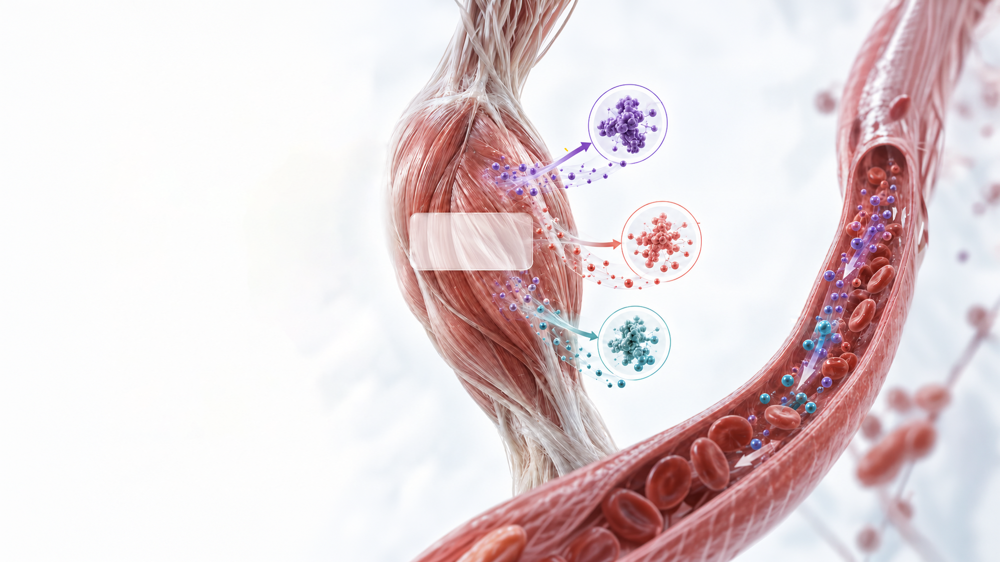
Contracting
Skeletal Muscle as
an Endocrine Organ
MYOKINES / EXERKINES
- IL-6
- Irisin (FNDC5)
- IL-15
- FGF21
- Apelin
- Myonectin
GROWTH / VASCULAR FACTORS
- IGF-1
- VEGF
- HGF

MYOKINES / EXERKINES
- IL-6
- Irisin (FNDC5)
- IL-15
- FGF21
- Apelin
- Myonectin
METABOLITES
- Lactate
- ATP / ADP / AMP
- Amino Acids
- Ketone Bodies
GROWTH / VASCULAR FACTORS
- IGF-1
- VEGF
- HGF
Contracting
Skeletal Muscle as
an Endocrine Organ
Read diagram text
MYOKINES / EXERKINES
- IL-6
- Irisin (FNDC5)
- IL-15
- FGF21
- Apelin
- Myonectin
METABOLITES
- Lactate
- ATP / ADP / AMP
- Amino Acids
- Ketone Bodies
GROWTH / VASCULAR FACTORS
- IGF-1
- VEGF
- HGF
Contracting Skeletal Muscle as an Endocrine Organ
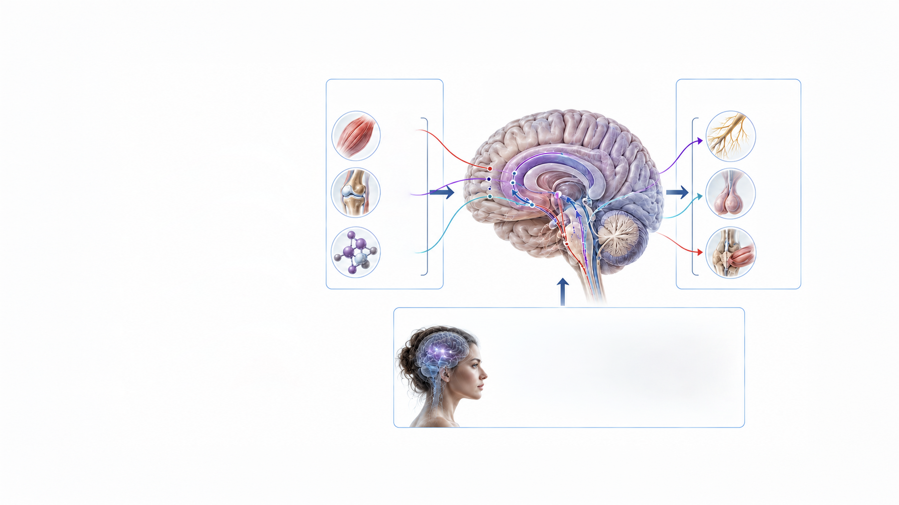
Neural Pathways
and CNS Integration
How Peripheral Exercise Signals Reach the Brain
Sensory information from muscles, joints and metabolic receptors travels through afferent pathways to the central nervous system.
The brainstem, hypothalamus, limbic system and cortex integrate these signals. Efferent output then coordinates the autonomic nervous system, HPA axis and motor system, allowing the brain and peripheral tissues to communicate in both directions.
Sensory and emotional context can further modify this response through limbic–hypothalamic, autonomic and neurochemical pathways.
AFFERENT SIGNALS
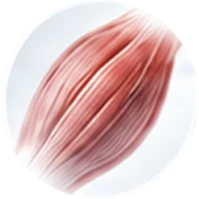
Muscle
Sensors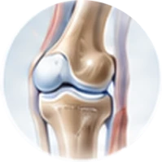
Joint
Sensors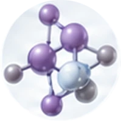
Metabolic
Sensors
CNS INTEGRATION
Brainstem; Hypothalamus; Limbic System; Cortex
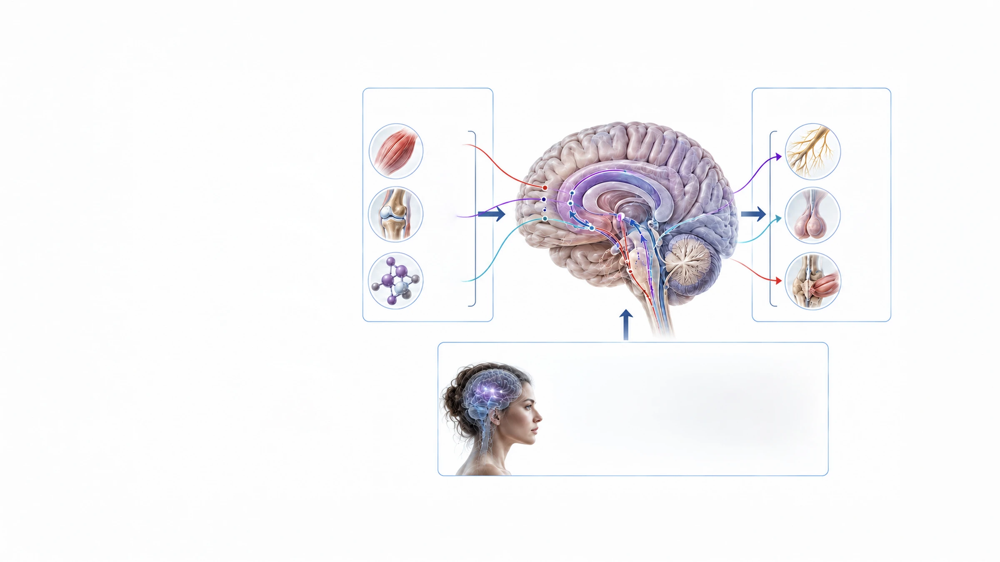
EFFERENT OUTPUT
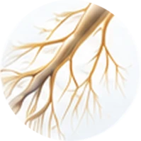
ANS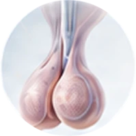
HPA Axis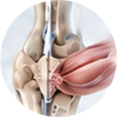
Motor
System
SENSORY–AFFECTIVE NEUROREGULATORY INPUTS
- Sensory Context
- Affective Valence
- Autonomic Modulation
- Stress-Buffering Inputs
- Limbic–Hypothalamic
Circuitry - HPA Axis / ANS
- Neurochemical
Signaling

AFFERENT SIGNALS
Muscle
Sensors
Joint
Sensors
Metabolic
Sensors
CNS INTEGRATION
Brainstem; Hypothalamus; Limbic System; Cortex
EFFERENT OUTPUT
ANS
HPA Axis
Motor
System
SENSORY–AFFECTIVE NEUROREGULATORY INPUTS
- Sensory Context
- Affective Valence
- Autonomic Modulation
- Stress-Buffering Inputs
Limbic–Hypothalamic
Circuitry
HPA Axis / ANS
Neurochemical
Signaling
Read diagram text
AFFERENT SIGNALS
Muscle Sensors
Joint Sensors
Metabolic Sensors
CNS INTEGRATION
Brainstem; Hypothalamus; Limbic System; Cortex
EFFERENT OUTPUT
ANS
HPA Axis
Motor System
SENSORY–AFFECTIVE NEUROREGULATORY INPUTS
- Sensory Context
- Affective Valence
- Autonomic Modulation
- Stress-Buffering Inputs
Limbic–Hypothalamic Circuitry
HPA Axis / ANS
Neurochemical Signaling
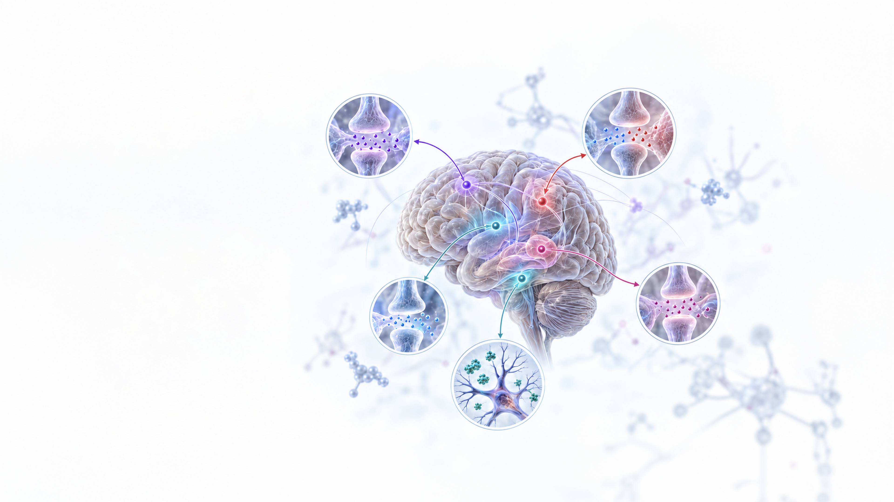
Neurochemical and
Neuroregulatory
Responses
Neuro
Responses
How Exercise Modulates Brain Signaling
Exercise influences multiple neurochemical systems involved in motivation, emotional regulation, cognition, pain perception and neural adaptation.
Monoaminergic, cholinergic, excitatory–inhibitory and endogenous reward pathways respond alongside neurotrophic factors. These systems do not operate independently; their coordinated regulation shapes the brain’s response to physical activity.
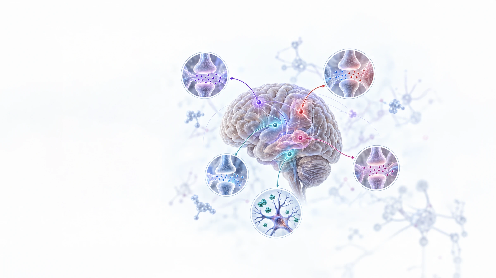
MONOAMINERGIC SYSTEM
- Dopamine (DA)
- Serotonin (5-HT)
- Norepinephrine (NE)
EXCITATORY–INHIBITORY
BALANCE
- Improved
Glutamate–GABA
Balance
CHOLINERGIC
SIGNALING
- Acetylcholine (ACh)
ENDOGENOUS REWARD
& ANALGESIA
- Endo
cannabinoids
(AEA, 2-AG) - β-Endorphin
NEUROTROPHIC FACTORS
- BDNF
- IGF-1
- VEGF

MONOAMINERGIC SYSTEM
- Dopamine (DA)
- Serotonin (5-HT)
- Norepinephrine (NE)
EXCITATORY–INHIBITORY
BALANCE
- Improved
Glutamate–GABA
Balance
CHOLINERGIC
SIGNALING
- Acetylcholine (ACh)
ENDOGENOUS REWARD
& ANALGESIA
- Endocannabinoids
(AEA, 2-AG) - β-Endorphin
NEUROTROPHIC FACTORS
- BDNF
- IGF-1
- VEGF
Read diagram text
MONOAMINERGIC SYSTEM
- Dopamine (DA)
- Serotonin (5-HT)
- Norepinephrine (NE)
EXCITATORY–INHIBITORY BALANCE
- Improved Glutamate–GABA Balance
CHOLINERGIC SIGNALING
- Acetylcholine (ACh)
ENDOGENOUS REWARD & ANALGESIA
- Endocannabinoids (AEA, 2-AG)
- β-Endorphin
NEUROTROPHIC FACTORS
- BDNF
- IGF-1
- VEGF
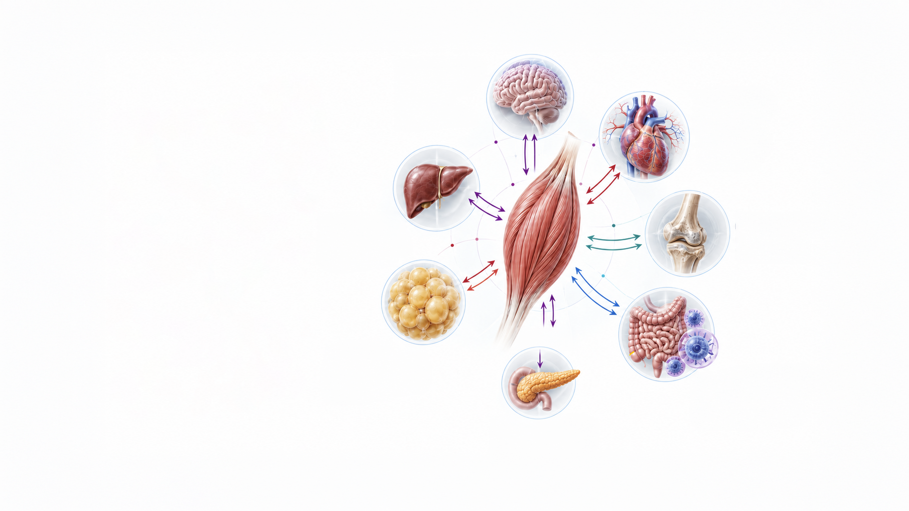
Inter-Organ
Crosstalk
Exercise Connects Muscle
With Systemic Organs
Signals generated during exercise create multidirectional communication between skeletal muscle, the brain and peripheral organs.
This inter-organ crosstalk coordinates
neural, metabolic, vascular, skeletal
and immune responses. Rather than
acting on one tissue alone, exercise
produces an integrated systemic
response across multiple biological
axes.
CONTRACTING
SKELETAL MUSCLE
MUSCLE–BRAIN AXIS
- Neuroplasticity
- Mood
- Cognition
- Stress Resilience
MUSCLE–HEART &
VASCULAR AXIS
- NO Production
- Angiogenesis
- Blood Pressure
Regulation
MUSCLE–BONE AXIS
- Osteoblast Activity
- Bone Remodeling
MUSCLE–LIVER AXIS
- Glucose Uptake
- Glycogen Regulation
- Insulin Sensitivity
MUSCLE–ADIPOSE AXIS
- Lipolysis
- Reduced Visceral Fat
- Adipokine Modulation
MUSCLE–PANCREAS AXIS
- Insulin Secretion
- Glucose Homeostasis
MUSCLE–IMMUNE / GUT AXIS
- Immune Regulation
- Cytokine Balance
- Gut Microbiota Modulation

MUSCLE–BRAIN AXIS
- Neuroplasticity
- Mood
- Cognition
- Stress Resilience
MUSCLE–HEART &
VASCULAR AXIS
- NO Production
- Angiogenesis
- Blood Pressure
Regulation
MUSCLE–BONE AXIS
- Osteoblast Activity
- Bone Remodeling
MUSCLE–LIVER AXIS
- Glucose Uptake
- Glycogen Regulation
- Insulin Sensitivity
MUSCLE–ADIPOSE AXIS
- Lipolysis
- Reduced Visceral Fat
- Adipokine Modulation
MUSCLE–IMMUNE / GUT AXIS
- Immune Regulation
- Cytokine Balance
- Gut Microbiota Modulation
MUSCLE–PANCREAS AXIS
- Insulin Secretion
- Glucose Homeostasis
CONTRACTING
SKELETAL MUSCLE
Read diagram text
MUSCLE–BRAIN AXIS
- Neuroplasticity
- Mood
- Cognition
- Stress Resilience
MUSCLE–HEART & VASCULAR AXIS
- NO Production
- Angiogenesis
- Blood Pressure Regulation
MUSCLE–BONE AXIS
- Osteoblast Activity
- Bone Remodeling
MUSCLE–LIVER AXIS
- Glucose Uptake
- Glycogen Regulation
- Insulin Sensitivity
MUSCLE–ADIPOSE AXIS
- Lipolysis
- Reduced Visceral Fat
- Adipokine Modulation
MUSCLE–IMMUNE / GUT AXIS
- Immune Regulation
- Cytokine Balance
- Gut Microbiota Modulation
MUSCLE–PANCREAS AXIS
- Insulin Secretion
- Glucose Homeostasis
CONTRACTING SKELETAL MUSCLE
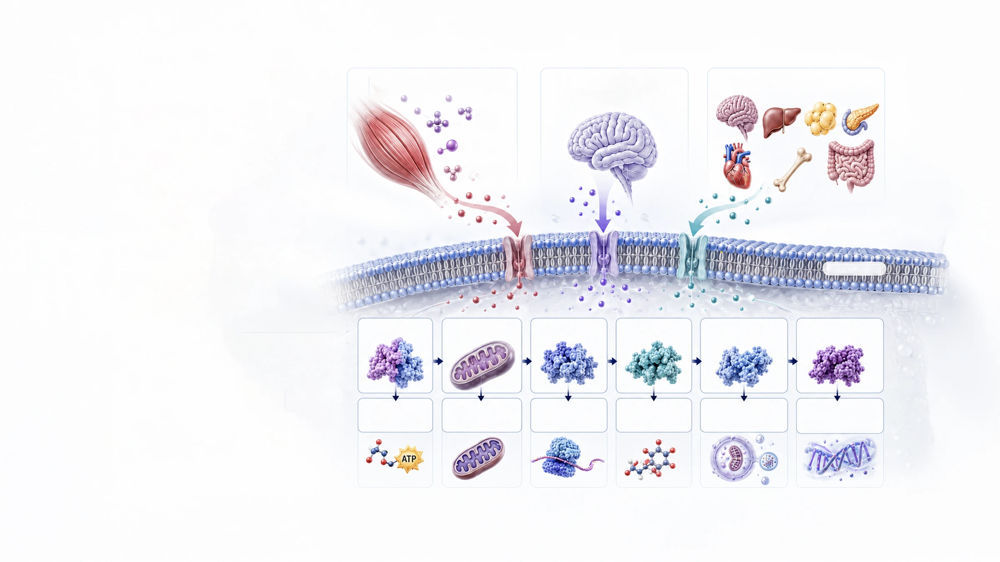
Downstream
Intracellular
Signaling
How Exercise Signals Produce Cellular Adaptation
Peripheral, neural and inter-organ signals ultimately converge on intracellular pathways that regulate energy use, mitochondrial function, protein synthesis, antioxidant defense, cellular renewal and inflammatory adaptation.
With repeated exercise, activation of these pathways allows short-term physiological responses to develop into more persistent cellular and systemic adaptations.
Peripheral Signals
(From Contracting Muscle and Other Tissues)
- Myokines /
Exerkines - Metabolites
- Growth /
Vascular Factors
Neurochemical and
Neuroregulatory Responses
(Central Nervous System)
Inter-Organ Crosstalk
Extracellular space
Cell membrane
Cytoplasm
- AMPK
- Energy
Metabolism - PGC-1α
- Mitochondrial
Biogenesis - Akt / mTOR
- Protein
Synthesis - Nrf2
- Antioxidant
Defense - Sirtuins
(SIRT1) - Autophagy /
Mitophagy - NF-κB
(Chronic) - Cellular Repair &
Anti-Inflammatory
Adaptation

Peripheral Signals
(From Contracting Muscle and Other Tissues)
Myokines /
Exerkines
Metabolites
Growth /
Vascular Factors
Neurochemical and
Neuroregulatory Responses
(Central Nervous System)
Inter-Organ Crosstalk
Extracellular space
Cell membrane
Cytoplasm
AMPK
PGC-1α
Akt / mTOR
Nrf2
Sirtuins
(SIRT1)
NF-κB
(Chronic)
Energy
Metabolism
Mitochondrial
Biogenesis
Protein
Synthesis
Antioxidant
Defense
Autophagy /
Mitophagy
Cellular Repair &
Anti-Inflammatory
Adaptation
ATP
Read diagram text
Peripheral Signals
(From Contracting Muscle and Other Tissues)
Myokines / Exerkines
Metabolites
Growth / Vascular Factors
Neurochemical and Neuroregulatory Responses
(Central Nervous System)
Inter-Organ Crosstalk
Extracellular space
Cell membrane
Cytoplasm
AMPK
Energy Metabolism
PGC-1α
Mitochondrial Biogenesis
Akt / mTOR
Protein Synthesis
Nrf2
Antioxidant Defense
Sirtuins (SIRT1)
Autophagy / Mitophagy
NF-κB (Chronic)
Cellular Repair & Anti-Inflammatory Adaptation
ATP